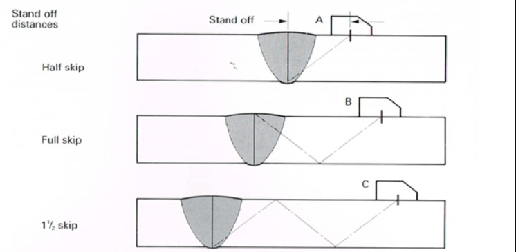

DEPARTEMEN PENGUJIAN PERALATAN KHUSUS ERM
Portal Inspeksi Digital
Kalkulator UT Skip Distance
Ketebalan Material (t) mm
Sudut Probe (Angle) °
1/2 Skip
ROOT
Target: Akar Las / LOP
-
mm
Full Skip
CAP
Target: Permukaan Atas
-
mm
1½ Skip
CHECK
Konfirmasi Root
-
mm
Visualisasi Beam Path
